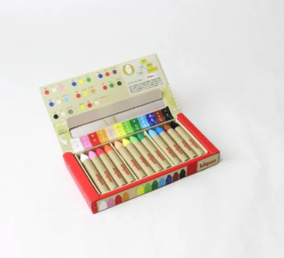

虹の丘こども美術館 × 寺子屋にじがおか
〜 親子でめぐる美術館ルームツアー＆塗り絵・絵画体験 〜
地域で活動する保育者アーティスト・髙森遼一さんのお話を聞き、実際の作品を間近で見て、同じ画材で描いてみる。見る・聞く・描くを親子で楽しむ2時間です。絵が得意でなくても、上手な感想が言えなくても大丈夫。正解のない、自分だけの色に出会いにきてください。
対象：虹ヶ丘小学校 1〜6年生（保護者ご同伴）／会場：虹ヶ丘こども文化センター
髙森さんの作品を、親子でぐるり。「好きな色」「気になる絵」を見つけよう。
プレゼントのキットパスを使って、好きな色を思いきり。塗り絵も自由画もOK。
描いた作品と、髙森さんオリジナルのキットパスをおうちへ持ち帰れます。
キリンを黄色で塗ってもいい。空をピンクにしてもいい。
かつて色づかいをわらわれた髙森さんは、いま「自分らしい色」で描きつづけています。その作品にふれると、「感じたままの色でいいんだ」と、すっと肩の力が抜けます。ひとりひとり、見え方も感じ方もちがう。そのちがいを、まるごと楽しむ2時間です。
保護者の方も、見守るだけではありません。お子さんと一緒に作品を見て、色を選び、感じ方を聞き合います。「どうしてこの色にしたの？」ではなく「どの色がいちばん好き？」——上手・下手をジャッジせず、それぞれの"好き"を楽しんでください。
幼稚園教諭・保育士・障がい児者支援員として、17年にわたり子どもたちと関わってきた保育者アーティスト。髙森さんには生まれつき色の見え方に特性があります。見え方や感じ方は一人ひとりちがう——その経験を大切にしながら、自分らしい色で作品を描いています。
子どもの頃には、自分の色づかいをわらわれて絵から離れた時期もありました。大人になって再び描きはじめ、いまは「すべての子どもが、自分らしく生きられるように」という願いをこめて、鉛筆や色鉛筆で作品を制作しています。当日は作品を展示するだけでなく、ご本人から制作への思いや、色を自由に楽しむことについてお話しいただきます。
まずは髙森さんの世界観を知ることから。そのあと美術館ルームツアー、そしてキットパスを使った塗り絵・自由画へ。ゆったり2時間をお楽しみください。
受付をすませて、席へ。はじめての子も、ゆっくりどうぞ。
色の見え方に特性を持つ髙森さんが、なぜ絵を描いているのか。まずは髙森さん自身のことばで、その世界観を知ってみましょう。
髙森さんの作品を、親子でぐるり。「どうしてこの色なの？」を入口に、じっくり作品世界にふれます。
プレゼントの髙森さんオリジナル「キットパス」を使って、いよいよ創作タイム。髙森さんの絵をもとにした塗り絵と、なにを描いてもいい自由画、どちらもOK。見本どおりに描かなくて大丈夫、好きな色を思いきり使ってみよう。会場には髙森さんもいるので、色えらびに迷ったら相談できます。早くできた子は、別の絵にチャレンジしたり、髙森さんとおしゃべりしたりして過ごせます。
描いた作品を、見せたい子はみんなにおひろめ（発表は自由・むりにしなくてOK）。親子で「ここが好き」を伝え合ったら、フォトスポットで記念さつえい。最後に、描いた作品と髙森さんオリジナルのキットパスをおうちに持ち帰って、おしまいです。

クレヨンみたいな、ふしぎな色えんぴつ。ふつうのクレヨンとちがって、つるつるの窓ガラスや鏡にもスルスル描けるんだ。まちがえても、ぬれた布でサッとふけば消えるから、なんども描きなおせるよ。
色をかさねたり、指でこすってぼかしたり——遊び方は自由。今回は髙森さんオリジナルの、お店では買えない特別なキットパスを、来てくれたお子さんぜんいんにプレゼントします。
※ キットパスは安全性に配慮した原料でつくられたアート画材です。小さなお子さんは、おうちの方と一緒に使ってね。
対象：虹ヶ丘小学校 1〜6年生（保護者ご同伴）・参加無料・20組。
お申し込み多数の場合は抽選となります（寺子屋にじがおか〜放課後ラボ〜 学習支援登録者を優先とさせていただく場合があります）。
お申し込みフォーム公開までしばらくお待ちください。
寺子屋にじがおか 公式LINEでも受付・ご案内します。